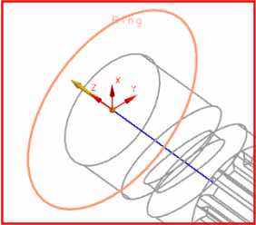
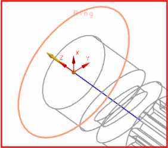

创建旋转副
在环形物以及蜗杆上创建旋转副。
-
在环形物中心处创建一个固定旋转副。运动副的方位在您选择环形物时就已经自动判断了。

-
在蜗杆中心处创建一个固定旋转副。选择连杆中心孔的顶边来定义方位。Z 轴应该朝上，如图所示，如果不是，点击反向
 以反转运动副方向。
以反转运动副方向。
在驱动选项卡中，定义一个恒定运动驱动，其中初速度为180。

在环形物以及蜗杆上创建旋转副。
在环形物中心处创建一个固定旋转副。运动副的方位在您选择环形物时就已经自动判断了。

在蜗杆中心处创建一个固定旋转副。选择连杆中心孔的顶边来定义方位。Z 轴应该朝上，如图所示，如果不是，点击反向  以反转运动副方向。
以反转运动副方向。
在驱动选项卡中，定义一个恒定运动驱动，其中初速度为180。